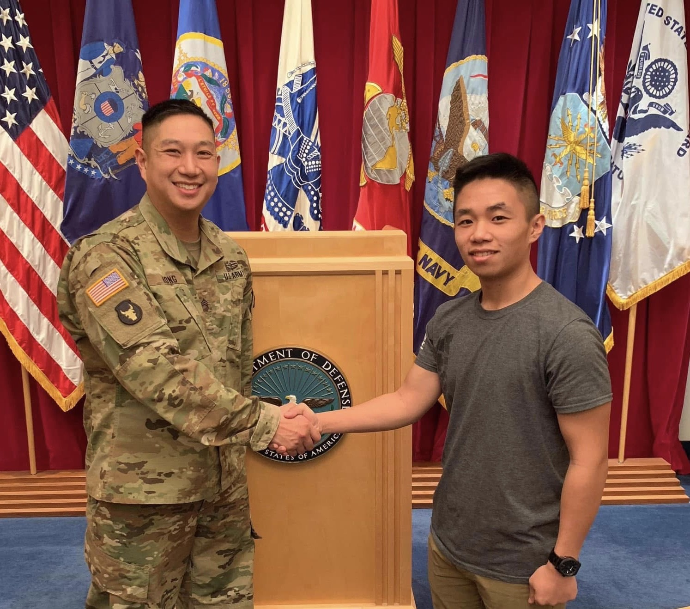
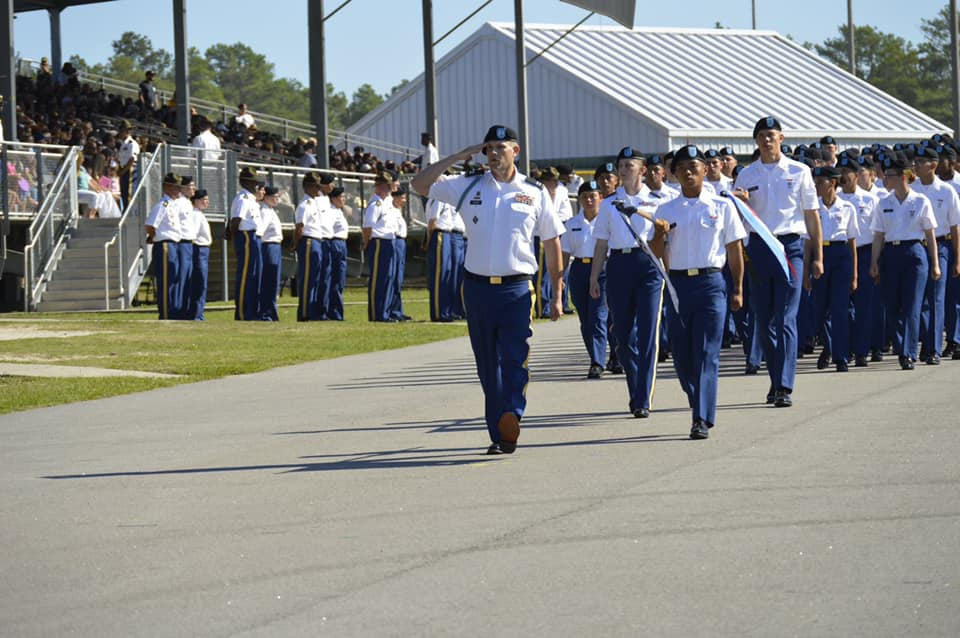
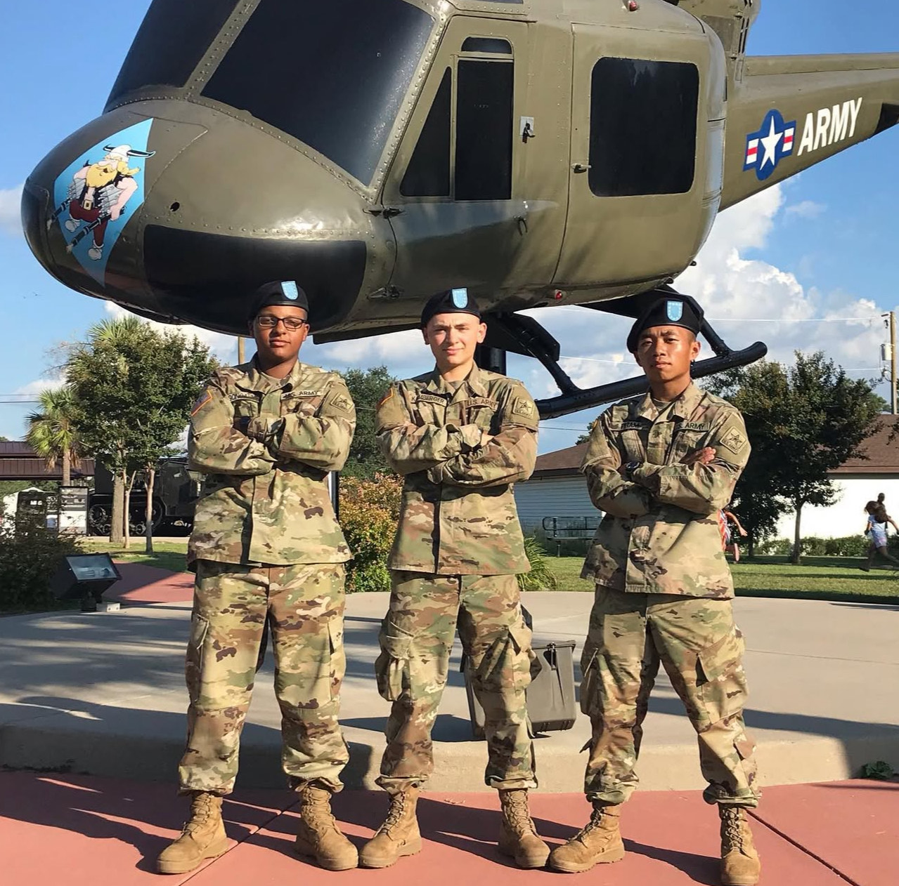
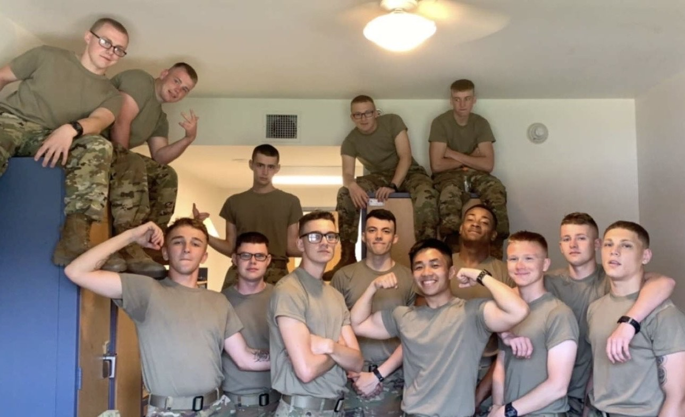
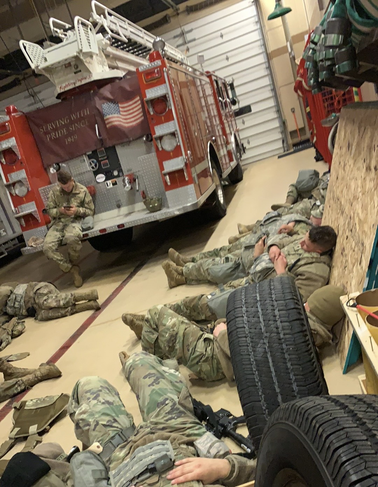
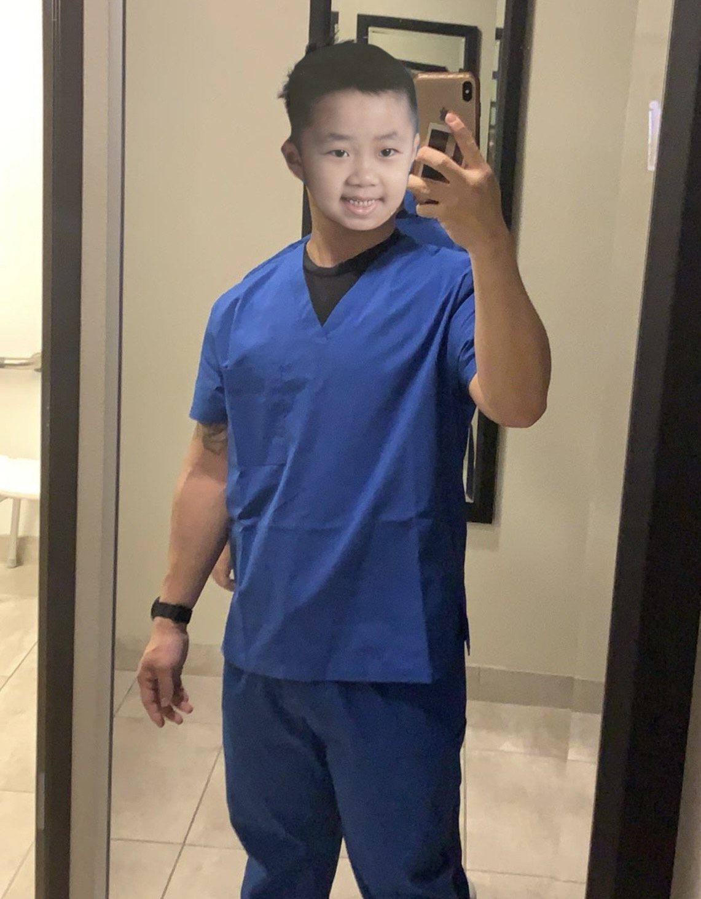
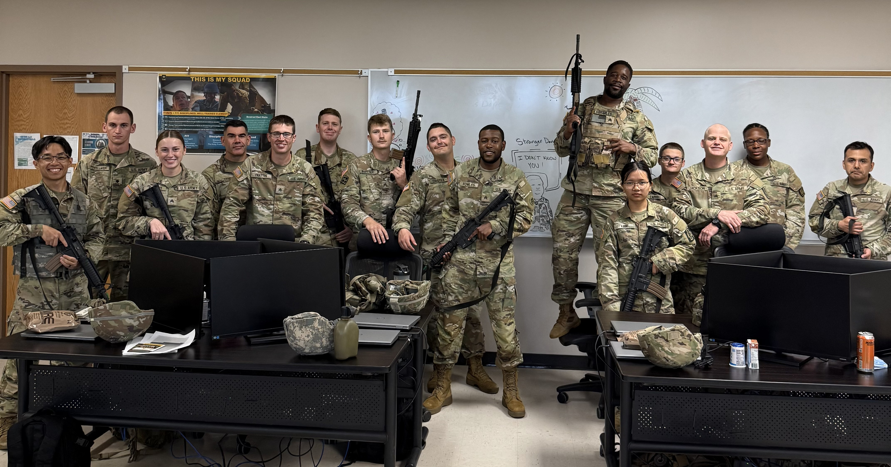

Service Timeline
-

My recruiter SSG Hong and I at MEPS after the swear in ceremony.

The pic we took reminds me of that scene of Michael Scott lol.
-

Company Guidon Bearer for Foxtrot Co. 2-13th

(Formation led by Captain Payne, Company Commander)Photo of me with my friends Pvt. Goncalves and Pvt. Kamberger (Kamberger scored 311/300 on the PT test, he was almost the Guidon bearer haha.)
-
-

Fun fact: nearly half of my platoon which was composed of about 30 Soldiers — were from Minnesota
-

We were temporarily staged in a firestation before our next post location was decided. Some people took naps until it was time to move out.
-

Didn't like how I looked here so here a sticker of me as a kid instead.
-

Official Class Photo.
Group Photo with my Classmates.